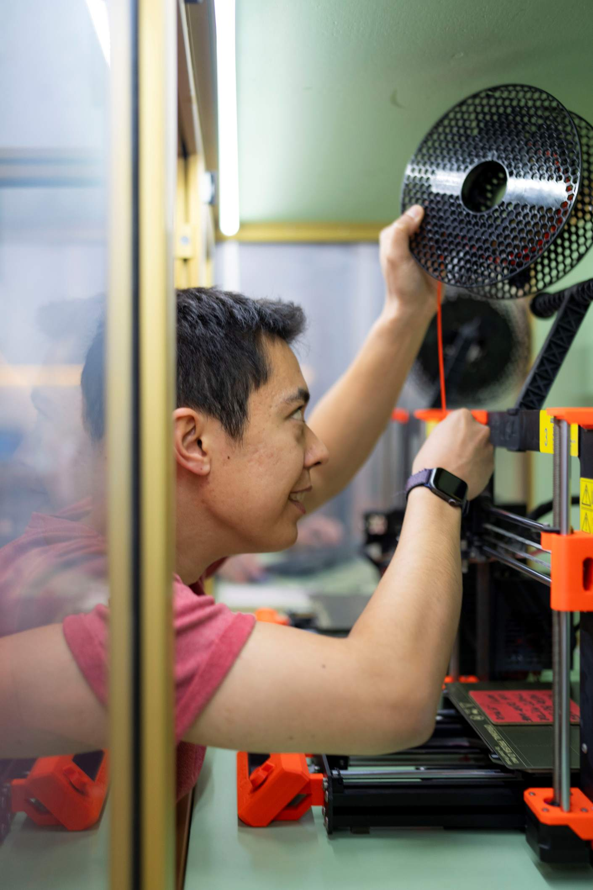

News
- [Oct'26] New preprint! Tactile Curiosity Drives Robot Interaction. Check out the TACEX project page!
- [May'26] I have started my PhD at the Learning and Adaptive Systems Group at ETH Zürich!
- [Apr'26] New preprint! Proud to present the work from my Master's thesis: Model-Based Reinforcement Learning for Control under Time-Varying Dynamics
- [Feb'26] Excited to announce that our work has been accepted to ICLR 2026: Sample-efficient and Scalable Exploration in Continuous-Time RL
About me

© ETH Foundation / Valeriano Di DomenicoHi, I'm Klemens. I am a PhD student at the Learning and Adaptive Systems (LAS) Group and at NCCR Automation supervised by Prof. Andreas Krause. Previously, I was a Master's student in Robotics at D-MAVT at ETH Zurich.
I am most interested in Advanced Control Methods (Optimal Control, Model Predictive Control) as well as Machine Learning and Artificial Intelligence applications in Robotics, like Model-based RL or exploration in RL. Along the way, I have been fortunate to receive an ETH Excellence Scholarship, an Outstanding Teaching Assistant Award from D-MAVT, and recognition for academic performance during my exchange at Northwestern University.
Besides my studies, I am an elected member of parliament for Zug. Read more about it on this page.
Links
- LinkedIn: /in/klemensiten
- Google Scholar
- CV: Link
Contact
- E-Mail: kiten[ät]ethz[dot]ch
- Phone: +41 44 632 82 92
- Office: OAT Y 29 @ ETH Zürich, Institute for Machine Learning, Andreasstrasse 5, 8092 Zürich